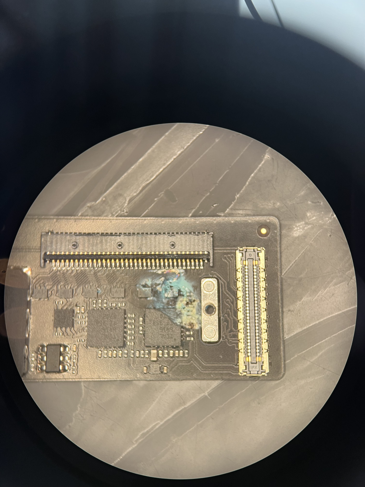

Wasserschaden-Reparatur & Korrosionsbeseitigung
Professionelle Ultraschallreinigung und gezielte Beseitigung von Korrosion auf Bauteilebene nach Flüssigkeitsschäden.
Beispiel: Ein iPhone oder MacBook nach Kontakt mit Wasser oder Kaffee, das nicht mehr startet oder Ladefehler aufweist, wird zerlegt, chemisch von Rückständen befreit und beschädigte SMD-Komponenten werden instand gesetzt.